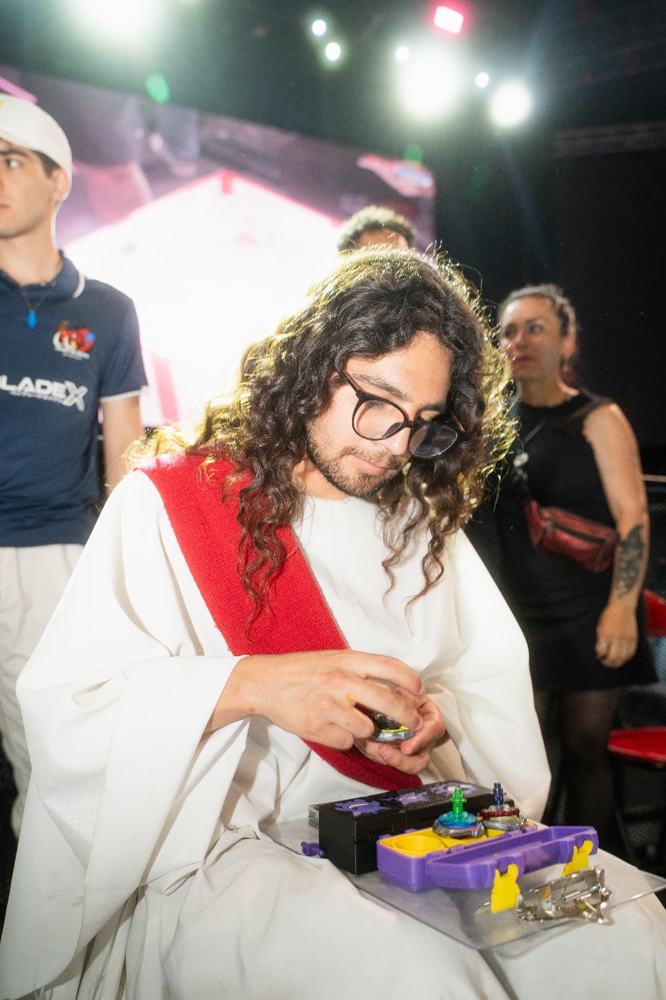

Estudiante de 5to año de Ing. en Realidad Virtual y Diseño de Juegos Digitales, en la UBO. Un apasionado por el modelado 3D, la escenografía, la fotografía, hacer contenido y todo lo referente a ello.
Mi motivación para aprender y querer crear momentos y sentimientos es dejar una huella en cada persona que me conozca o vea mi trabajo, o simplemente hacer feliz a cada usuario y persona posible :)